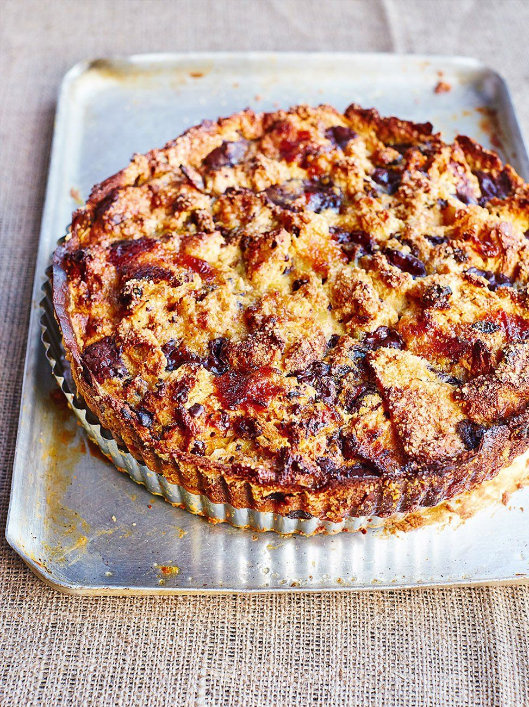

<!DOCTYPE html>
<html lang="en">
<head>
    <meta charset="UTF-8">
    <meta name="viewport" content="width=device-width, initial-scale=1.0">
    <title>Bread & Butter Pudding>
    <link rel="stylesheet" href="/style.css">
</head>
<body>
    <h1>Bread and Butter Pudding</h1>
    
    <h2>Description:</h2>
    <p></p>
    <h3>Ingredients:</h3>
    <ul>
        <li>1 pint (575 milliliters) milk (don't use 2 percent, 1 percent, or skim)</li>
        <li>1 pint (575 milliliters) double cream (heavy cream)</li>
        <li>1 vanilla pod</li>
        <li>4 medium eggs</li>
        <li>6 ounces (170 grams) caster sugar (superfine sugar)</li>
        <li>Panettone, cut into thick slices and buttered</li>
        <li>1 orange, zested</li>
        <li>A little icing sugar</li>
    </ul>
    <h3>Steps</h3>
    <ol>
        <li>To start the custard base, bring the milk and cream just to a boil in a saucepan. Cut the vanilla pod in half, scrape out the seeds and add to the pan with the zest. Whisk the eggs with the sugar until pale. Add the milk and cream and remove the vanilla.</li>
        <li>Preheat the oven to 325 degrees F (160 degrees C/Gas 3).</li>
        <li>Dip each slice of panettone into the custard and pile into a buttered baking dish. Pour the remaining custard slowly over the bread, place the dish in a roasting pan and fill halfway with hot water. Sprinkle with the icing sugar and bake for about 45 minutes. When cooked, it will have a slight crust on top, but will still be slightly wobbly inside.</li>
    </ol>
    <a href="https://www.jamieoliver.com/recipes/chocolate/bonkers-bread-butter-panettone-pudding-tart/">See the full receipt at Jamie Oliver's Website</a>
</body>
</html>